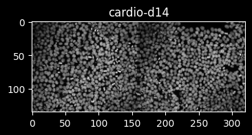
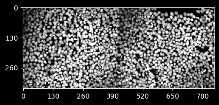
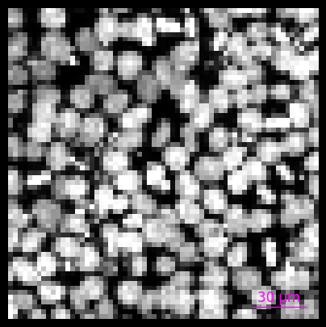
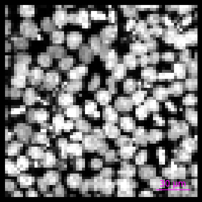
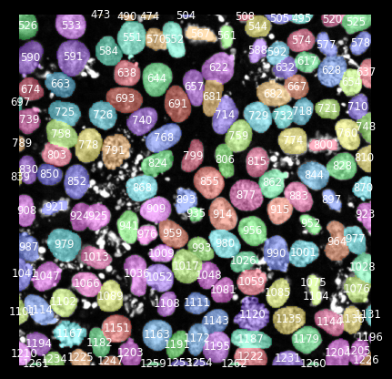
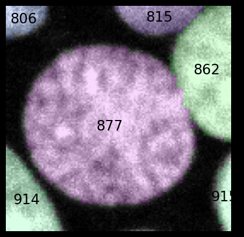

Using ez_zarr to explore individual OME-Zarr images
Silvia Barbiero, Michael Stadler, Charlotte Soneson
- Goal
- Using
ome_zarr.Imageobjects - Working with images with time dimension
- Working with multiple images
- Session info
Goal
The aim of ez_zarr is to provide easy, high-level access to microscopy
data, stored in OME-Zarr format according to the
NGFF specifications.
In addition to the python package, we also provide an R package that
automatically generates and wraps a python environment with ez_zarr
and all dependencies, available at https://github.com/fmicompbio/ezzarr.
The ome_zarr.Image class represents an individual image and provides
methods to obtain metadata, extract image or label arrays and visualize
these. Below we illustrate the use of ome_zarr.Image objects by
examples.
Using ome_zarr.Image objects
Note: If you prefer to run these examples interactively, you can also download them as an ipynb notebook.
Here are some examples of how you can use ome_zarr.Image objects
defined in ez_zarr:
Download example data
To run the code below, you will first need to download some image data. You can do this for example by running the following from a terminal:
# Download small Fractal output from Zenodo
curl -o temp.zip https://zenodo.org/records/10519143/files/20200812-CardiomyocyteDifferentiation14-Cycle1_mip.zarr.zip
# Unzip and remove the temporary zip file
unzip temp.zip
rm temp.zip
or directly from within a python notebook or session using:
import pandas as pd
import requests
import zipfile
import tempfile
import shutil
import os
import sys
# for info on data see: https://zenodo.org/records/10257149
url = 'https://zenodo.org/records/10519143/files/20200812-CardiomyocyteDifferentiation14-Cycle1_mip.zarr.zip'
# download
response = requests.get(url)
with open('temp.zip', 'wb') as temp_zip:
temp_zip.write(response.content)
# unzip to current directory
with zipfile.ZipFile('temp.zip', 'r') as zip_ref:
zip_ref.extractall('.')
# clean up
os.remove('temp.zip')
Load packages
import matplotlib.pyplot as plt
from matplotlib.colors import ListedColormap
import numpy as np
from skimage import color
from ez_zarr import ome_zarr, plotting, utils
Open OME-Zarr file set
We open a single OME-Zarr image:
img_directory = '20200812-CardiomyocyteDifferentiation14-Cycle1_mip.zarr/B/03/0'
img = ome_zarr.Image(path = img_directory, name = 'cardio-d14')
img
/opt/hostedtoolcache/Python/3.11.13/x64/lib/python3.11/site-packages/zarr/core/group.py:3530: ZarrUserWarning: Object at .DS_Store is not recognized as a component of a Zarr hierarchy.
warnings.warn(
/opt/hostedtoolcache/Python/3.11.13/x64/lib/python3.11/site-packages/zarr/core/group.py:3530: ZarrUserWarning: Object at empty_well_ROI_table_1_True_0_0 is not recognized as a component of a Zarr hierarchy.
warnings.warn(
/opt/hostedtoolcache/Python/3.11.13/x64/lib/python3.11/site-packages/zarr/core/group.py:3530: ZarrUserWarning: Object at empty_well_ROI_table_0_True_0_0 is not recognized as a component of a Zarr hierarchy.
warnings.warn(
/opt/hostedtoolcache/Python/3.11.13/x64/lib/python3.11/site-packages/zarr/core/group.py:3530: ZarrUserWarning: Object at table_well_ROI_table_3_False_0_0 is not recognized as a component of a Zarr hierarchy.
warnings.warn(
/opt/hostedtoolcache/Python/3.11.13/x64/lib/python3.11/site-packages/zarr/core/group.py:3530: ZarrUserWarning: Object at empty_well_ROI_table_1_False_0_0 is not recognized as a component of a Zarr hierarchy.
warnings.warn(
/opt/hostedtoolcache/Python/3.11.13/x64/lib/python3.11/site-packages/zarr/core/group.py:3530: ZarrUserWarning: Object at table_overwrite_True is not recognized as a component of a Zarr hierarchy.
warnings.warn(
/opt/hostedtoolcache/Python/3.11.13/x64/lib/python3.11/site-packages/zarr/core/group.py:3530: ZarrUserWarning: Object at table_FOV_ROI_table_1_False_0_0 is not recognized as a component of a Zarr hierarchy.
warnings.warn(
/opt/hostedtoolcache/Python/3.11.13/x64/lib/python3.11/site-packages/zarr/core/group.py:3530: ZarrUserWarning: Object at table_masked_nuclei_ROI_table_0_True_0_0 is not recognized as a component of a Zarr hierarchy.
warnings.warn(
/opt/hostedtoolcache/Python/3.11.13/x64/lib/python3.11/site-packages/zarr/core/group.py:3530: ZarrUserWarning: Object at table_well_ROI_table_3_True_0_0 is not recognized as a component of a Zarr hierarchy.
warnings.warn(
/opt/hostedtoolcache/Python/3.11.13/x64/lib/python3.11/site-packages/zarr/core/group.py:3530: ZarrUserWarning: Object at empty_well_ROI_table_0_False_0_0 is not recognized as a component of a Zarr hierarchy.
warnings.warn(
/opt/hostedtoolcache/Python/3.11.13/x64/lib/python3.11/site-packages/zarr/core/group.py:3530: ZarrUserWarning: Object at table_FOV_ROI_table_1_True_0_0 is not recognized as a component of a Zarr hierarchy.
warnings.warn(
/opt/hostedtoolcache/Python/3.11.13/x64/lib/python3.11/site-packages/zarr/core/group.py:3530: ZarrUserWarning: Object at table_masked_nuclei_ROI_table_1_True_0_0 is not recognized as a component of a Zarr hierarchy.
warnings.warn(
/opt/hostedtoolcache/Python/3.11.13/x64/lib/python3.11/site-packages/zarr/core/group.py:3530: ZarrUserWarning: Object at table_overwrite_False is not recognized as a component of a Zarr hierarchy.
warnings.warn(
/opt/hostedtoolcache/Python/3.11.13/x64/lib/python3.11/site-packages/zarr/core/group.py:3530: ZarrUserWarning: Object at table_well_ROI_table_0_True_0_0 is not recognized as a component of a Zarr hierarchy.
warnings.warn(
Image cardio-d14
path: 20200812-CardiomyocyteDifferentiation14-Cycle1_mip.zarr/B/03/0
n_channels: 1 (DAPI)
n_pyramid_levels: 5
pyramid_zyx_scalefactor: [1. 2. 2.]
full_resolution_zyx_spacing (micrometer): [1.0, 0.1625, 0.1625]
segmentations: nuclei, empty
tables (measurements): expected_table_well_ROI_table_0_True_0_0, well_ROI_table, expected_table_well_ROI_table_3_False_0_0, expected_table_masked_nuclei_ROI_table_0_True_0_0, FOV_ROI_table, expected_table_masked_nuclei_ROI_table_1_True_0_0, expected_table_well_ROI_table_3_True_0_0, expected_table_FOV_ROI_table_1_False_0_0, nuclei_ROI_table, nuclei, expected_table_FOV_ROI_table_1_True_0_0
img represents a maximum intensity projection of one well from a
high-content screening plate, processed using
Fractal. In addition to
such images with two spatial dimensions, ez-zarr supports OME-Zarr
images with any number of dimensions, automatically projecting images
with more than two spatial dimensions for plotting.
In img, there are 5 pyramid_levels available (0 to 4), meaning that
in addition to the full resolution data (level 0), we have four more
levels that provide the data in 2-fold lower resolutions (see
pyramid_zyx_scalefactor), for example for faster plotting.
This OME-Zarr image also contains two segmentations (empty and
nuclei), and for one measurements have been extracted and saved in the
table nuclei. In addition, there are some further tables, such as
FOV_ROI_table, which contains the coordinates of the fields of view,
or nuclei_ROI_table, which contains the bounding box coordinates for
the segmented nuclei.
Get information from img
You can obtain specific information on the content available in the image:
'20200812-CardiomyocyteDifferentiation14-Cycle1_mip.zarr/B/03/0'
[{'color': '00FFFF',
'label': 'DAPI',
'wavelength_id': 'A01_C01',
'window': {'end': 800, 'max': 65535, 'min': 0, 'start': 110}}]
['nuclei', 'empty']
['expected_table_well_ROI_table_0_True_0_0',
'well_ROI_table',
'expected_table_well_ROI_table_3_False_0_0',
'expected_table_masked_nuclei_ROI_table_0_True_0_0',
'FOV_ROI_table',
'expected_table_masked_nuclei_ROI_table_1_True_0_0',
'expected_table_well_ROI_table_3_True_0_0',
'expected_table_FOV_ROI_table_1_False_0_0',
'nuclei_ROI_table',
'nuclei',
'expected_table_FOV_ROI_table_1_True_0_0']
# zyx pixel spacing in micrometers for pyramid levels
# ... for images (channels, z, y, x)
img.get_scale(pyramid_level='0')
[1, 1.0, 0.1625, 0.1625]
[1.0, 0.65, 0.65]
/ ├── 0 (1, 1, 2160, 5120) uint16 ├── 1 (1, 1, 1080, 2560) uint16 ├── 2 (1, 1, 540, 1280) uint16 ├── 3 (1, 1, 270, 640) uint16 ├── 4 (1, 1, 135, 320) uint16 ├── labels │ ├── empty │ │ ├── 0 (1, 540, 1280) uint32 │ │ ├── 1 (1, 270, 640) uint32 │ │ ├── 2 (1, 135, 320) uint32 │ │ ├── 3 (1, 67, 160) uint32 │ │ └── 4 (1, 33, 80) uint32 │ └── nuclei │ ├── 0 (1, 540, 1280) uint32 │ ├── 1 (1, 270, 640) uint32 │ ├── 2 (1, 135, 320) uint32 │ ├── 3 (1, 67, 160) uint32 │ └── 4 (1, 33, 80) uint32 └── tables ├── FOV_ROI_table │ ├── X (2, 8) float32 │ ├── layers │ ├── obs │ │ └── FieldIndex (2,) object │ ├── obsm │ ├── obsp │ ├── uns │ ├── var │ │ └── _index (8,) object │ ├── varm │ └── varp ├── expected_table_FOV_ROI_table_1_False_0_0 │ ├── X (1504, 18) float32 │ ├── layers │ ├── obs │ │ ├── ROI_name (1504,) object │ │ ├── ROI_table_name (1504,) object │ │ ├── _index (1504,) int64 │ │ └── label (1504,) int64 │ ├── obsm │ ├── obsp │ ├── uns │ ├── var │ │ └── _index (18,) object │ ├── varm │ └── varp ├── expected_table_FOV_ROI_table_1_True_0_0 │ ├── X (1504, 38) float32 │ ├── layers │ ├── obs │ │ ├── ROI_name (1504,) object │ │ ├── ROI_table_name (1504,) object │ │ ├── _index (1504,) int64 │ │ └── label (1504,) int64 │ ├── obsm │ ├── obsp │ ├── uns │ ├── var │ │ └── _index (38,) object │ ├── varm │ └── varp ├── expected_table_masked_nuclei_ROI_table_0_True_0_0 │ ├── X (1493, 22) float32 │ ├── layers │ ├── obs │ │ ├── ROI_label (1493,) int64 │ │ ├── ROI_name (1493,) object │ │ ├── ROI_table_name (1493,) object │ │ ├── _index (1493,) int64 │ │ └── label (1493,) int64 │ ├── obsm │ ├── obsp │ ├── uns │ ├── var │ │ └── _index (22,) object │ ├── varm │ └── varp ├── expected_table_masked_nuclei_ROI_table_1_True_0_0 │ ├── X (1493, 38) float32 │ ├── layers │ ├── obs │ │ ├── ROI_label (1493,) int64 │ │ ├── ROI_name (1493,) object │ │ ├── ROI_table_name (1493,) object │ │ ├── _index (1493,) int64 │ │ └── label (1493,) int64 │ ├── obsm │ ├── obsp │ ├── uns │ ├── var │ │ └── _index (38,) object │ ├── varm │ └── varp ├── expected_table_well_ROI_table_0_True_0_0 │ ├── X (1493, 22) float32 │ ├── layers │ ├── obs │ │ ├── ROI_name (1493,) object │ │ ├── ROI_table_name (1493,) object │ │ ├── _index (1493,) int64 │ │ └── label (1493,) int64 │ ├── obsm │ ├── obsp │ ├── uns │ ├── var │ │ └── _index (22,) object │ ├── varm │ └── varp ├── expected_table_well_ROI_table_3_False_0_0 │ ├── X (1493, 50) float32 │ ├── layers │ ├── obs │ │ ├── ROI_name (1493,) object │ │ ├── ROI_table_name (1493,) object │ │ ├── _index (1493,) int64 │ │ └── label (1493,) int64 │ ├── obsm │ ├── obsp │ ├── uns │ ├── var │ │ └── _index (50,) object │ ├── varm │ └── varp ├── expected_table_well_ROI_table_3_True_0_0 │ ├── X (1493, 70) float32 │ ├── layers │ ├── obs │ │ ├── ROI_name (1493,) object │ │ ├── ROI_table_name (1493,) object │ │ ├── _index (1493,) int64 │ │ └── label (1493,) int64 │ ├── obsm │ ├── obsp │ ├── uns │ ├── var │ │ └── _index (70,) object │ ├── varm │ └── varp ├── nuclei │ ├── X (1493, 7) float32 │ ├── layers │ ├── obs │ │ ├── _index (1493,) int64 │ │ └── label (1493,) object │ ├── obsm │ ├── obsp │ ├── uns │ ├── var │ │ └── _index (7,) object │ ├── varm │ └── varp ├── nuclei_ROI_table │ ├── X (1493, 6) float32 │ ├── layers │ ├── obs │ │ ├── _index (1493,) object │ │ └── label (1493,) object │ ├── obsm │ ├── obsp │ ├── uns │ ├── var │ │ └── _index (6,) object │ ├── varm │ └── varp └── well_ROI_table ├── X (1, 6) float32 ├── layers ├── obs │ └── FieldIndex (1,) object ├── obsm ├── obsp ├── uns ├── var │ └── _index (6,) object ├── varm └── varp
Extract a table from the OME-Zarr image
At the time of writing, tabular data is not yet covered in the NGFF standard. The tables stored within this OME-Zarr image are formatted as described in the Fractal documentation.
As mentioned the goal of ez_zarr is to abstract the internal structure
and make it simple to obtain these tables as a pandas.DataFrame :
| FieldIndex | x_micrometer | y_micrometer | z_micrometer | len_x_micrometer | len_y_micrometer | len_z_micrometer | x_micrometer_original | y_micrometer_original |
|---|---|---|---|---|---|---|---|---|
| FOV_1 | 0 | 0 | 0 | 416 | 351 | 1 | -1448.3 | -1517.7 |
| FOV_2 | 416 | 0 | 0 | 416 | 351 | 1 | -1032.3 | -1517.7 |
or anndata.AnnData object:
AnnData object with n_obs × n_vars = 2 × 8
Visualize the image
get_array_by_coordinate() extracts a rectangular region of interest
from an image by coordinates. If no coordinates or other arguments are
given, it returns the whole image at the lowest available resolution:
(1, 1, 135, 320)
Such an image array can be easily plotted using
matplotlib.pyplot.imshow:
with plt.style.context('dark_background'):
fig = plt.figure(figsize=(4, 4))
fig.set_dpi(100)
plt.imshow(arr[0,0], cmap='gray', vmin=100, vmax=600)
plt.title(img.name)
plt.show()
plt.close()

With plot(), ome_zarr.Image provides a convenient function for this
that automatically extracts the well image and plots it. Because it has
access to the image metadata, it can also add for example a scale bar:
img.plot(channels=[0],
channel_colors=['white'],
channel_ranges=[[100, 600]],
title=img.name,
scalebar_micrometer=150,
scalebar_color='yellow',
scalebar_position='topleft',
scalebar_label=True,
fig_width_inch=5,
fig_height_inch=4,
fig_dpi=100)
plot() uses internally ez_zarr.plotting.plot_image() which is a
convenient wrapper around matplotlib.pyplot.imshow. plot_image() can
also be used directly if you want to work with image arrays (for
examples, see section “Working with segmentation masks” below).
Zoom in
Let’s first show the coordinate axes for our image:

Now we can zoom in by coordinates:
img.plot(upper_left_yx=(130, 140),
lower_right_yx=(300, 310),
scalebar_micrometer=30,
scalebar_color='magenta',
fig_width_inch=5,
fig_height_inch=5,
fig_dpi=100)

So far, we have been automatically using the lowest resolution pyramid level version of the data, and the micrometer coordinates above have been automatically converted to the corresponding pixel coordinates.
If we want to get the same image region at a higher resolution, we can
use the pyramid_level argument:
img.plot(pyramid_level=0,
upper_left_yx=(130, 140),
lower_right_yx=(300, 310),
scalebar_micrometer=30,
scalebar_color='magenta',
fig_width_inch=5,
fig_height_inch=5,
fig_dpi=100)
You can see from the scale bar that again conversion from micrometer to pixel coordinates are performed automatically.
If you prefer to work with pixel coordinates, for example for slicing
numpy arrays, get_array_by_coordinate or plot also support that.
Let’s first look at the full image at low resolution again, now using pixel coordinates for the axes:
Now we zoom in using pixel coordinates (coordinate_unit='pixel'):
img.plot(coordinate_unit='pixel',
upper_left_yx=(50, 56),
lower_right_yx=(115, 121),
scalebar_micrometer=30,
scalebar_color='magenta',
fig_width_inch=5,
fig_height_inch=5,
fig_dpi=100)

Again, we were automatically using the lowest resolution of the image,
and we can use pyramid_level to select a higher resolution. When
working with pixel coordinates, we will need to specify that our
coordinates still refer to the currently selected pyramid_level (4),
in order to obtain the same region of the image. This can be done using
the pyramid_level_coord argument:
img.plot(coordinate_unit='pixel',
pyramid_level=0, # extract image from this level
pyramid_level_coord=4, # coordinates refer to this level
upper_left_yx=(50, 56),
lower_right_yx=(115, 121),
scalebar_micrometer=30,
scalebar_color='magenta',
fig_width_inch=5,
fig_height_inch=5,
fig_dpi=100)
Coordinate conversions (usually done internally)
As mentioned the pixel coordinates depend on the pyramid_level. The
image metadata makes it easy to convert between pixel coordinates and
micrometer coordinates, or pixel coordinates referring to different
pyramid levels. The get_array_by_coordinate and plot methods do this
automatically.
You can do it also manually by using get_scale to obtain the pixel
sizes (in micrometer) from the image metadata, and
ez_zarr.utils.convert_coordinates to do the actual conversion:
# let's define some pixel coordinates referring to pyramid level 4
zyx_4 = (1, 230, 180)
print(f'starting coordinates (pixels in pyramid level 4): {zyx_4}')
# get pixel scale at pyramid level 4 (z, y, x)
s_4 = img.get_scale(pyramid_level=4, spatial_axes_only=True)
print(f'pixel scale (pyramid level 4, micrometer): {s_4}')
# convert from pyramid level 4 to 2
s_2 = img.get_scale(pyramid_level=2, spatial_axes_only=True)
print(f'pixel scale (pyramid level 2, micrometer): {s_2}')
zyx_2 = utils.convert_coordinates(coords_from=zyx_4,
scale_from=s_4,
scale_to=s_2)
print(f'starting coordinates converted to pyramid level 2 (pixel): {zyx_2}')
# convert from pixel to micrometers
# remark: scales are in micrometer -> the target scale is 1.0 for each axis
zyx_um = utils.convert_coordinates(coords_from=zyx_4,
scale_from=s_4,
scale_to=[1.0, 1.0, 1.0])
print(f'starting coordinates converted to micrometer: {zyx_um}')
# convert back from micrometers to pixels
zyx_px = utils.convert_coordinates(coords_from=zyx_um,
scale_from=[1.0, 1.0, 1.0],
scale_to=s_4)
print(f'starting coordinates converted back to pixel (pyramid level 4): {zyx_px}')
starting coordinates (pixels in pyramid level 4): (1, 230, 180)
pixel scale (pyramid level 4, micrometer): [1.0, 2.6, 2.6]
pixel scale (pyramid level 2, micrometer): [1.0, 0.65, 0.65]
starting coordinates converted to pyramid level 2 (pixel): (1.0, 920.0, 720.0)
starting coordinates converted to micrometer: (1.0, 598.0, 468.0)
starting coordinates converted back to pixel (pyramid level 4): (1.0, 230.0, 180.0)
These functions are also used by plot() internally to add a scale bar
to the image plot, as we have seen above.
Working with segmentation masks
When segmentation masks (labels) are available, we can for example plot
them with transparency on top of the image, by selecting the desired
label using label_name:
img.plot(label_name='nuclei',
pyramid_level=0,
upper_left_yx=(130, 140),
lower_right_yx=(300, 310),
scalebar_micrometer=30,
scalebar_color='white',
fig_width_inch=5,
fig_height_inch=5,
fig_dpi=100)
/opt/hostedtoolcache/Python/3.11.13/x64/lib/python3.11/site-packages/ez_zarr/ome_zarr.py:944: UserWarning: For the requested pyramid level (0) of the intensity image, no matching label ('nuclei') is available. Up-scaling the label using factor(s) [1. 4. 4.]
warnings.warn(f"For the requested pyramid level ({pyramid_level}) of the intensity image, no matching label ('{lname}') is available. Up-scaling the label using factor(s) {scalefact_yx}")
You may notice that the above will warn about no labels being available
for the requested intensity image pyramid level. The plot method will
automatically use the label with the closest resolution and scale it to
match the intensity image.
For your convenience, it is also possible to specify multiple label
names using a list (for example to reuse the same label name list when
working with multiple images that have different labels). plot() will
still only display a single label mask, namely the first one in the
provided list that is available for the image (so the order of label
names matters):
img.plot(label_name=['whole_cells', 'nuclei', 'mitochondria'],
pyramid_level=0,
upper_left_yx=(130, 140),
lower_right_yx=(300, 310),
scalebar_micrometer=30,
scalebar_color='white',
fig_width_inch=5,
fig_height_inch=5,
fig_dpi=100)
Using label_name='nuclei' for image cardio-d14
/opt/hostedtoolcache/Python/3.11.13/x64/lib/python3.11/site-packages/ez_zarr/ome_zarr.py:944: UserWarning: For the requested pyramid level (0) of the intensity image, no matching label ('nuclei') is available. Up-scaling the label using factor(s) [1. 4. 4.]
warnings.warn(f"For the requested pyramid level ({pyramid_level}) of the intensity image, no matching label ('{lname}') is available. Up-scaling the label using factor(s) {scalefact_yx}")

Using the show_label_values argument of plotting.plot_image, the
label values can be added (optionally also using the label_fontsize
and label_text_colour argument to ):
img.plot(show_label_values=True,
label_fontsize='small',
label_text_colour='white',
label_name='nuclei',
pyramid_level=0,
upper_left_yx=(130, 140),
lower_right_yx=(300, 310),
fig_width_inch=5,
fig_height_inch=5,
fig_dpi=100)
/opt/hostedtoolcache/Python/3.11.13/x64/lib/python3.11/site-packages/ez_zarr/ome_zarr.py:944: UserWarning: For the requested pyramid level (0) of the intensity image, no matching label ('nuclei') is available. Up-scaling the label using factor(s) [1. 4. 4.]
warnings.warn(f"For the requested pyramid level ({pyramid_level}) of the intensity image, no matching label ('{lname}') is available. Up-scaling the label using factor(s) {scalefact_yx}")

If you are interested in a specific object, you can pass its value to
the label_value argument (and optionally use the extend_pixels and
msk_alpha arguments), to automatically select appropriate coordinates:
img.plot(label_value=877,
extend_pixels=10,
msk_alpha=0.15,
show_label_values=True,
label_fontsize='xx-large',
label_text_colour='black',
label_name='nuclei',
pyramid_level=0,
fig_width_inch=5,
fig_height_inch=5,
fig_dpi=100)
/opt/hostedtoolcache/Python/3.11.13/x64/lib/python3.11/site-packages/ez_zarr/ome_zarr.py:944: UserWarning: For the requested pyramid level (0) of the intensity image, no matching label ('nuclei') is available. Up-scaling the label using factor(s) [1. 4. 4.]
warnings.warn(f"For the requested pyramid level ({pyramid_level}) of the intensity image, no matching label ('{lname}') is available. Up-scaling the label using factor(s) {scalefact_yx}")
For performance reasons, the bounding box for an object given by
label_value is calculated on the lowest-resolution label image by
default. This may lead to imprecise results, as here where the lower
part of object 877 is truncated. To improve the precision of the
bounding box calculation, you can manually select the pyramid level to
be used, using the argument label_pyramid_level:
img.plot(label_value=877,
label_pyramid_level='2',
extend_pixels=10,
msk_alpha=0.15,
show_label_values=True,
label_fontsize='xx-large',
label_text_colour='black',
label_name='nuclei',
pyramid_level=0,
fig_width_inch=5,
fig_height_inch=5,
fig_dpi=100)
/opt/hostedtoolcache/Python/3.11.13/x64/lib/python3.11/site-packages/ez_zarr/ome_zarr.py:944: UserWarning: For the requested pyramid level (0) of the intensity image, no matching label ('nuclei') is available. Up-scaling the label using factor(s) [1. 4. 4.]
warnings.warn(f"For the requested pyramid level ({pyramid_level}) of the intensity image, no matching label ('{lname}') is available. Up-scaling the label using factor(s) {scalefact_yx}")

If you want to restrict the plot to the exact are within that specific
object (or objects), you can use the restrict_to_label_values argument
and provide a list of values:
img.plot(label_value=877,
label_pyramid_level='2',
restrict_to_label_values=[877,914],
extend_pixels=10,
msk_alpha=0.15,
show_label_values=True,
label_fontsize='xx-large',
label_text_colour='black',
label_name='nuclei',
pyramid_level=0,
fig_width_inch=5,
fig_height_inch=5,
fig_dpi=100)
/opt/hostedtoolcache/Python/3.11.13/x64/lib/python3.11/site-packages/ez_zarr/ome_zarr.py:944: UserWarning: For the requested pyramid level (0) of the intensity image, no matching label ('nuclei') is available. Up-scaling the label using factor(s) [1. 4. 4.]
warnings.warn(f"For the requested pyramid level ({pyramid_level}) of the intensity image, no matching label ('{lname}') is available. Up-scaling the label using factor(s) {scalefact_yx}")
Calculations on the image data
Let’s obtain again the intensity image data in the form of an array:
To save memory, images are stored on disk and only loaded when needed
(for implementation details see the dask Array
documentation).
This can be demonstrated by type(arr) and sys.getsizeof(arr):
zarr.core.array.Array
56
To force loading of the data into memory as a numpy array, you can
call np.array(arr):
numpy.ndarray
86560
In general, you can use dask arrays like numpy arrays. For example,
we can threshold the image:
numpy.ndarray
# plot
plotting.plot_image(im=arr[:,0], msk=arr_mask, msk_alpha=0.5,
fig_width_inch=6, fig_height_inch=6, fig_dpi=100)
This is of course not a recommended way to segment this image, but
rather meant to demonstrate that the dask arrays can be used just like
numpy arrays.
Extracting arrays and plotting them directly with plotting.plot_image
is also the recommended way to do more complex tasks that are not
directly supported by the arguments in Image.plot. For example, you
could subset a 3D image to select just one or several z-planes of
interest, instead of using the automated projection
(z_projection_method argument of plotting.plot_image).
Working with images with time dimension
Images that include a time dimension can also be handled using
ez_zarr. For plotting such images, you have to specify which time
index to plot.
For illustration, we first download a small example image (showing a
tubulin histone GFP coexpressing C. elegans embryo) that is part of the
ez_zarr GitHub repository. The original data set was acquired on a
multiphoton workstation by Josh Bembenek, and is freely available from
openmicroscopy.org.
The data set included in ez_zarr is a subset of the original image (2
timepoints, 1 channel, 2 z-planes). In addition, a manual segmentation
label was added for illustration purposes.
# download an image with a time axis
url = "https://github.com/fmicompbio/ez_zarr/archive/refs/heads/main.zip"
with tempfile.TemporaryDirectory() as temp_dir:
response = requests.get(url)
response.raise_for_status() # raise an error if the request fails
# download
temp_zip_file = os.path.join(temp_dir, 'temp.zip')
with open(temp_zip_file, 'wb') as temp_zip:
temp_zip.write(response.content)
# unzip to current directory
with zipfile.ZipFile(temp_zip_file, 'r') as zip_ref:
zip_ref.extractall(temp_dir)
# locate the extracted folder
extracted_folder = os.path.join(temp_dir, "ez_zarr-main", "tests",
"example_data_5d")
# move the image to current working directory
if os.path.exists(extracted_folder):
shutil.copytree(extracted_folder, ".", dirs_exist_ok=True)
Now we open the image:
'tczyx'
The time axis contains three entries:
/ ├── 0 (3, 1, 2, 512, 512) uint8 ├── 1 (3, 1, 2, 256, 256) uint8 ├── 2 (3, 1, 2, 128, 128) uint8 └── labels └── embryo ├── 0 (3, 2, 512, 512) uint8 ├── 1 (3, 2, 256, 256) uint8 └── 2 (3, 2, 128, 128) uint8
We can plot selected timepoints by specifying the time_index argument
of Image.plot():
img5d.plot(time_index=0,
pyramid_level=0,
label_name="embryo",
fig_width_inch=6,
fig_height_inch=6,
fig_dpi=100)
Working with multiple images
In some cases, you may want to handle a set of images, such as images
corresponding to the well of an high-content screening plate. Such data
is represented in ez_zarr by ome_zarr.ImageList objects, and can be
created from a folder containing multiple images using the
ome_zarr.import_plate function:
img_directory = '20200812-CardiomyocyteDifferentiation14-Cycle1_mip.zarr'
imgL = ome_zarr.import_plate(img_directory)
imgL
/opt/hostedtoolcache/Python/3.11.13/x64/lib/python3.11/site-packages/zarr/core/group.py:3530: ZarrUserWarning: Object at .DS_Store is not recognized as a component of a Zarr hierarchy.
warnings.warn(
/opt/hostedtoolcache/Python/3.11.13/x64/lib/python3.11/site-packages/zarr/core/group.py:3530: ZarrUserWarning: Object at empty_well_ROI_table_0_True_0_0 is not recognized as a component of a Zarr hierarchy.
warnings.warn(
/opt/hostedtoolcache/Python/3.11.13/x64/lib/python3.11/site-packages/zarr/core/group.py:3530: ZarrUserWarning: Object at empty_well_ROI_table_1_True_0_0 is not recognized as a component of a Zarr hierarchy.
warnings.warn(
/opt/hostedtoolcache/Python/3.11.13/x64/lib/python3.11/site-packages/zarr/core/group.py:3530: ZarrUserWarning: Object at empty_well_ROI_table_1_False_0_0 is not recognized as a component of a Zarr hierarchy.
warnings.warn(
/opt/hostedtoolcache/Python/3.11.13/x64/lib/python3.11/site-packages/zarr/core/group.py:3530: ZarrUserWarning: Object at table_overwrite_True is not recognized as a component of a Zarr hierarchy.
warnings.warn(
/opt/hostedtoolcache/Python/3.11.13/x64/lib/python3.11/site-packages/zarr/core/group.py:3530: ZarrUserWarning: Object at table_well_ROI_table_3_False_0_0 is not recognized as a component of a Zarr hierarchy.
warnings.warn(
/opt/hostedtoolcache/Python/3.11.13/x64/lib/python3.11/site-packages/zarr/core/group.py:3530: ZarrUserWarning: Object at table_FOV_ROI_table_1_False_0_0 is not recognized as a component of a Zarr hierarchy.
warnings.warn(
/opt/hostedtoolcache/Python/3.11.13/x64/lib/python3.11/site-packages/zarr/core/group.py:3530: ZarrUserWarning: Object at table_well_ROI_table_3_True_0_0 is not recognized as a component of a Zarr hierarchy.
warnings.warn(
/opt/hostedtoolcache/Python/3.11.13/x64/lib/python3.11/site-packages/zarr/core/group.py:3530: ZarrUserWarning: Object at table_masked_nuclei_ROI_table_0_True_0_0 is not recognized as a component of a Zarr hierarchy.
warnings.warn(
/opt/hostedtoolcache/Python/3.11.13/x64/lib/python3.11/site-packages/zarr/core/group.py:3530: ZarrUserWarning: Object at table_masked_nuclei_ROI_table_1_True_0_0 is not recognized as a component of a Zarr hierarchy.
warnings.warn(
/opt/hostedtoolcache/Python/3.11.13/x64/lib/python3.11/site-packages/zarr/core/group.py:3530: ZarrUserWarning: Object at empty_well_ROI_table_0_False_0_0 is not recognized as a component of a Zarr hierarchy.
warnings.warn(
/opt/hostedtoolcache/Python/3.11.13/x64/lib/python3.11/site-packages/zarr/core/group.py:3530: ZarrUserWarning: Object at table_FOV_ROI_table_1_True_0_0 is not recognized as a component of a Zarr hierarchy.
warnings.warn(
/opt/hostedtoolcache/Python/3.11.13/x64/lib/python3.11/site-packages/zarr/core/group.py:3530: ZarrUserWarning: Object at table_overwrite_False is not recognized as a component of a Zarr hierarchy.
warnings.warn(
/opt/hostedtoolcache/Python/3.11.13/x64/lib/python3.11/site-packages/zarr/core/group.py:3530: ZarrUserWarning: Object at table_well_ROI_table_0_True_0_0 is not recognized as a component of a Zarr hierarchy.
warnings.warn(
ImageList of 1 images
paths: 20200812-CardiomyocyteDifferentiation14-Cycle1_mip.zarr/B/03/0
names: B03
Note that as our example data only contains a single well, this image list contains only a single image.
1
All methods available to ome_zarr.Image can also be used for
ome_zarr.ImageList objects, and some have special behavior, for
example the plot method that arranges the wells in plate layout
(automatically determined to be compatible with the observed wells):
The detected layout can be returned as a pandas.DataFrame:
| row_index | column_index | |
|---|---|---|
| 0 | 2 | 3 |
… and also set manually:
layout_df = pd.DataFrame.from_dict({'row_index': [1], 'column_index': [1]})
imgL.set_layout(layout_df)
imgL.plot()
Session info
/opt/hostedtoolcache/Python/3.11.13/x64/lib/python3.11/site-packages/session_info/main.py:213: UserWarning: The '__version__' attribute is deprecated and will be removed in MarkupSafe 3.1. Use feature detection, or `importlib.metadata.version("markupsafe")`, instead.
mod_version = _find_version(mod.__version__)
Click to view session information
----- anndata 0.12.2 ez_zarr 0.4.2 matplotlib 3.8.2 numpy 1.26.4 pandas 2.3.2 requests 2.32.5 session_info 1.0.0 skimage 0.22.0 zarr 3.1.3 -----
Click to view modules imported as dependencies
PIL 11.3.0 anyio NA arrow 1.3.0 asttokens NA attr 25.3.0 attrs 25.3.0 babel 2.17.0 certifi 2025.08.03 charset_normalizer 3.4.3 cloudpickle 3.1.1 comm 0.2.3 crc32c NA cycler 0.12.1 cython_runtime NA dask 2025.9.1 dateutil 2.9.0.post0 debugpy 1.8.17 decorator 5.2.1 defusedxml 0.7.1 donfig 0.8.1.post1 executing 2.2.1 fastjsonschema NA fqdn NA fsspec 2025.9.0 h5py 3.14.0 idna 3.10 importlib_metadata NA ipykernel 6.30.1 isoduration NA jedi 0.19.2 jinja2 3.1.6 json5 0.12.1 jsonpointer 3.0.0 jsonschema 4.25.1 jsonschema_specifications NA jupyter_events 0.12.0 jupyter_server 2.17.0 jupyterlab_server 2.27.3 kiwisolver 1.4.9 lark 1.2.2 lazy_loader 0.4 legacy_api_wrap NA markupsafe 3.0.2 matplotlib_inline 0.1.7 mpl_toolkits NA natsort 8.4.0 nbformat 5.10.4 numcodecs 0.16.3 overrides NA packaging 25.0 parso 0.8.5 platformdirs 4.4.0 prometheus_client NA prompt_toolkit 3.0.52 psutil 7.1.0 pure_eval 0.2.3 pydev_ipython NA pydevconsole NA pydevd 3.2.3 pydevd_file_utils NA pydevd_plugins NA pydevd_tracing NA pygments 2.19.2 pyparsing 3.2.5 pythonjsonlogger NA pytz 2025.2 referencing NA rfc3339_validator 0.1.4 rfc3986_validator 0.1.1 rfc3987_syntax NA rich NA rpds NA scipy 1.16.2 send2trash NA six 1.17.0 sniffio 1.3.1 stack_data 0.6.3 tabulate 0.9.0 testing NA tlz 1.0.0 toolz 1.0.0 tornado 6.5.2 traitlets 5.14.3 typing_extensions NA uri_template NA urllib3 2.5.0 wcwidth 0.2.13 webcolors NA websocket 1.8.0 yaml 6.0.2 zipp NA zmq 27.1.0 zoneinfo NA
----- IPython 9.5.0 jupyter_client 8.6.3 jupyter_core 5.8.1 jupyterlab 4.4.7 notebook 7.4.5 ----- Python 3.11.13 (main, Jun 4 2025, 04:12:12) [GCC 13.3.0] Linux-6.11.0-1018-azure-x86_64-with-glibc2.39 ----- Session information updated at 2025-09-22 12:38